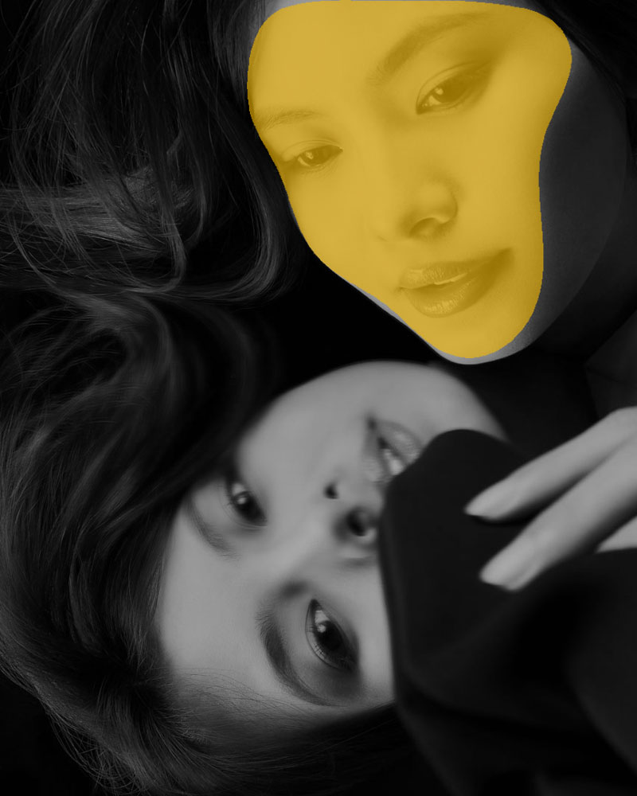
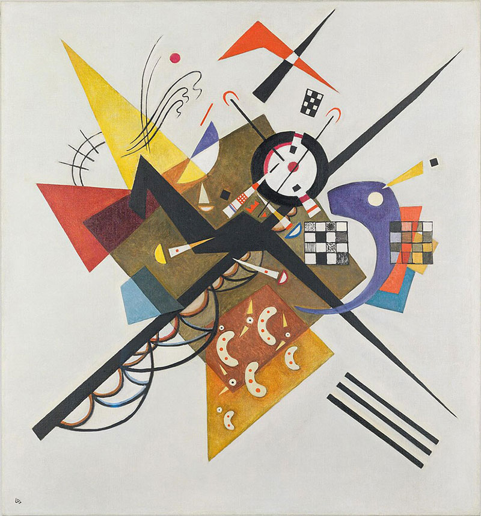
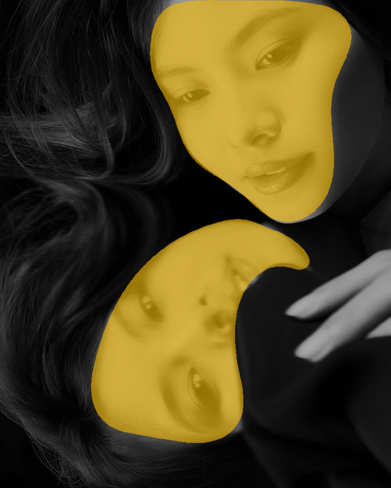
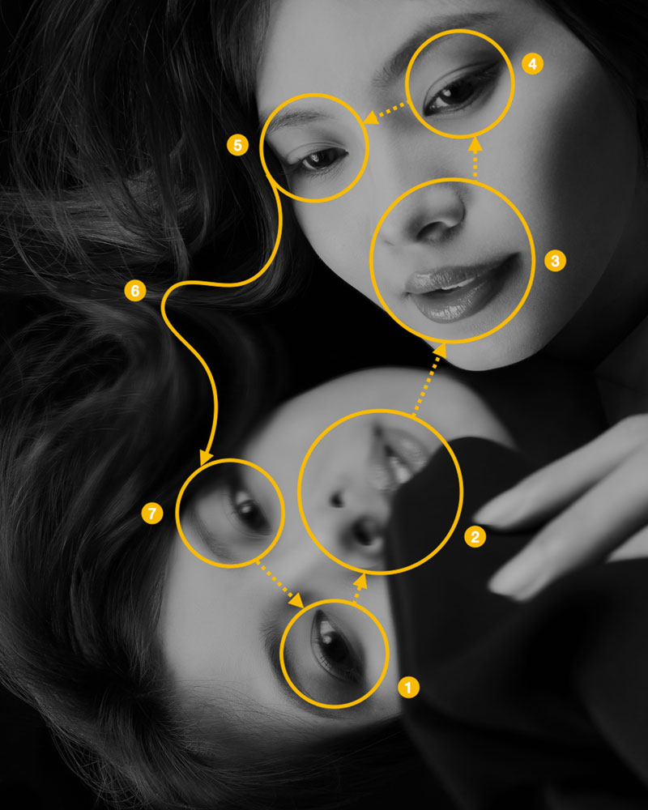

01

此消彼長
我讓光線從正面來，藉此減少了臉部亮暗的階調變化，畫面中臉的亮部與黑暗的背景間形成輪廓線，這條輪廓線形成了造形結構，越是抑制階調越是強化了造形，反之亦然。課程中我會帶同學實際操作視覺元素彼此相生相剋的關係。

視覺元素是人類自史前時代繪製洞穴壁畫以來就一直存在的客觀視覺語言。不過，俄國藝術家康丁斯基是第一位將這些視覺元素系統化、理論化。他把「點、線、面、色彩」從敘事性的故事中解放出來，讓它們成為能夠獨立表達情感，不需要依附於任何現實物體的主角。

我讓光線從正面來，藉此減少了臉部亮暗的階調變化，畫面中臉的亮部與黑暗的背景間形成輪廓線，這條輪廓線形成了造形結構，越是抑制階調越是強化了造形，反之亦然。課程中我會帶同學實際操作視覺元素彼此相生相剋的關係。

我讓Model趴在一面鏡子上，讓鏡面反射臉部的造形重複出現，但是這個重複不是複製貼上，而是方向、角度有所不同，造形相似而不相同，視覺韻律就在這種變化中長出來了。
拍攝時我觀察到Model呼出的氣息凝結在鏡面，因此我調整拍攝角度，讓鏡中反射剛好落在那片霧氣處，這樣鏡中的影像會模糊一點，實像清晰、鏡像模糊，虛實的關係就此形成。

人看人像作品，視覺會先掃描眼睛，這是生物本能。我安排Model不看鏡頭，而是看向鏡子裡的鏡頭，於是畫面裡，鏡中的虛像在看鏡頭，實像的Model在看鏡中的自己。觀者的視線路徑會先落在鏡中人的眼睛，再繞回實像的Model，無形中被提醒: 你正在「觀看」這件事本身。
攝影: James
模特: 溫蒂Wendy
場地: 333攝影棚B棚